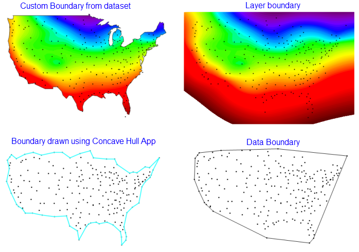
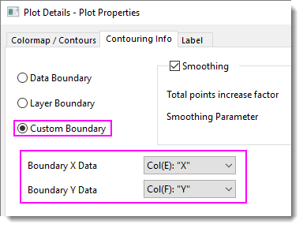

FAQ-1051 Wie füge ich eine Grenze zu einem Konturdiagramm hinzu?
add-boundary-contour-plot
Letztes Update: 29.03.2020
Es gibt mehrere Möglichkeiteb, wie Sie eine Grenze zu einem Konturdiagramm der XYZ-Arbeitsblattdaten hinzufügen können. Es gibt drei Optionen, die sich auf der Registerkarte Kontur-Info des Dialogs Details Zeichnung befinden:
- Klicken Sie doppelt auf die Zeichnung, um den Dialog Details Zeichnung zu öffnen. Klicken Sie dann auf die Registerkarte Kontur-Info.
-
- Benutzerdefinierte Grenze: Diese Option ist wahrscheinlich die gängigste. Sie brauchen XY-Spalten, die eine benutzerdefinierte Grenze definieren.
- Datengrenze: Diese Option erstellt eine Grenze, indem eine konvexe Hülle um die Datenpunkte herum gezeichnet wird.
- Layergrenze: Diese Option erstelle eine grenze, die mit dem Layerrahmen (Ansicht: Zeige: Rahmen) übereinstimmt.

Eine weitere Option besteht in der Verwendung der kostenlosen App Concave Hull zum Zeichnen einer konkaven Hülle um die Datenpunkte.
- Falls Sie die App nicht bereits installiert haben, drücken Sie F10, um das App-Center zu öffnen.
- Klicken Sie auf die Registerkarte Suche und suchen Sie nach Concave.
- Installieren Sie die App Concave Hull.
Die App nimmt die XY-Eingaben und gibt Concave Hull Xn und Concave Hull Yn aus. Verwenden Sie diese XY-Daten zum Definieren einer benutzerdefinierten Grenze wie oben beschrieben.
- 
Schlüsselwörter:konkave Hülle, konvexe Hülle, benutzerdefinierte Grenze, Datengrenze, Layergrenze, Interpolation, Kontur-Info